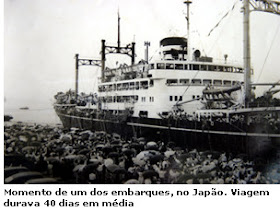
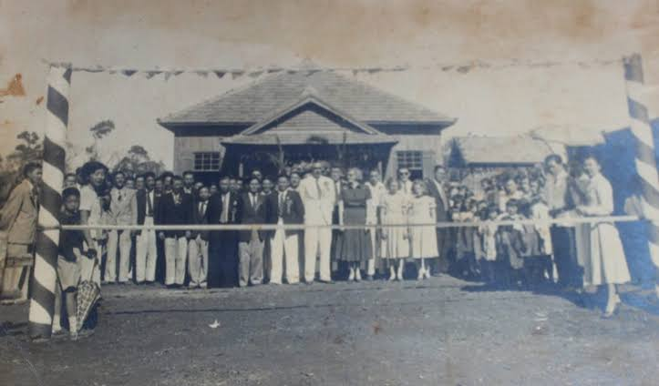
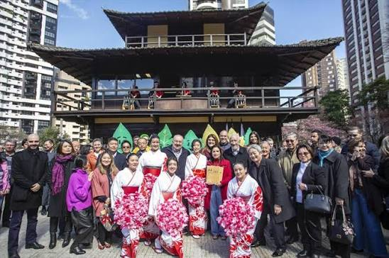

A Influência da Imigração Japonesa no Paraná
A imigração japonesa no Paraná é um tema importante para conhecer a diversidade cultural do estado. Neste trabalho, será apresentada a história dos imigrantes japoneses, seus costumes, tradições e a contribuição que deram para o desenvolvimento do Paraná. Será estudada a influência da comunidade japonesa, principalmente na agricultura e na preservação de suas tradições. Esse assunto está relacionado à arte e à cultura do Paraná porque a presença japonesa contribuiu para a culinária, as festas, as danças, o artesanato e outras manifestações culturais que fazem parte da identidade paranaense.

https://triaquimmalucelli.blogspot.com/2015/08/imigracao-japonesa-no-parana.htmlA História da Imigração Japonesa no Paraná
A imigração japonesa no Paraná começou a ganhar força no início do século XX, depois da chegada dos primeiros japoneses ao Brasil, em 1908. Muitos imigrantes vieram em busca de trabalho e novas oportunidades e, com o tempo, passaram a se estabelecer também no Paraná. Eles se dedicaram principalmente à agricultura, cultivando café, arroz, hortaliças e outros produtos. No Paraná, a comunidade japonesa se desenvolveu principalmente em regiões do norte do estado, como Londrina, Maringá e Assaí. A formação de colônias e associações ajudou os imigrantes a manter seus costumes, sua língua e suas tradições. Durante a Segunda Guerra Mundial, a comunidade japonesa enfrentou dificuldades e restrições, mas depois conseguiu se reorganizar e continuar contribuindo para o desenvolvimento do estado. Participaram dessa história os imigrantes japoneses, suas famílias e as comunidades e associações formadas por eles. A presença dessas pessoas deixou marcas importantes na agricultura, na culinária, nas festas, nas artes e na cultura do Paraná.

A Importância da Imigração Japonesa para a Arte e a Cultura Paranaense
A imigração japonesa é importante para a arte e a cultura paranaense porque não trouxe apenas mão de obra e técnicas agrícolas, mas também costumes, formas de expressão artística, valores comunitários e novas maneiras de produzir e apreciar arte. A presença japonesa no Paraná começou a se consolidar nas primeiras décadas do século XX e ganhou grande força no Norte do Estado a partir da década de 1930, contribuindo para a formação de cidades como Londrina, Assaí, Uraí e Maringá.

Curiosidades
Curiosidades 1
Uma curiosidade sobre a imigração japonesa no Brasil é que os primeiros imigrantes japoneses chegaram ao país em 1908, a bordo do navio Kasato Maru. Eles vieram principalmente para trabalhar nas plantações de café, especialmente no estado de São Paulo. Com o passar dos anos, a comunidade japonesa cresceu e contribuiu muito para a agricultura, a culinária e a cultura brasileira. Hoje, o Brasil possui uma das maiores comunidades de descendentes de japoneses fora do Japão.
Curiosidade 2
Uma curiosidade é que muitos imigrantes japoneses no Paraná começaram trabalhando com agricultura, principalmente no cultivo de café, mas depois passaram a cultivar também hortaliças, frutas e outros produtos. Isso ajudou a diversificar a agricultura paranaense. Além disso, os japoneses trouxeram técnicas de cultivo e organização agrícola que foram transmitidas entre gerações.